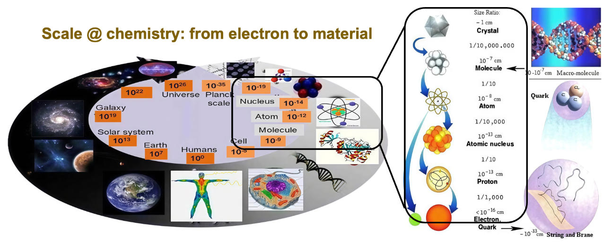
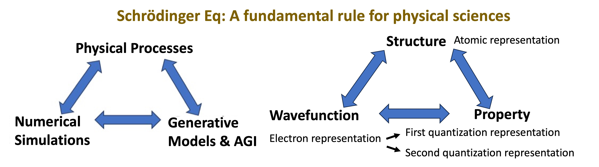
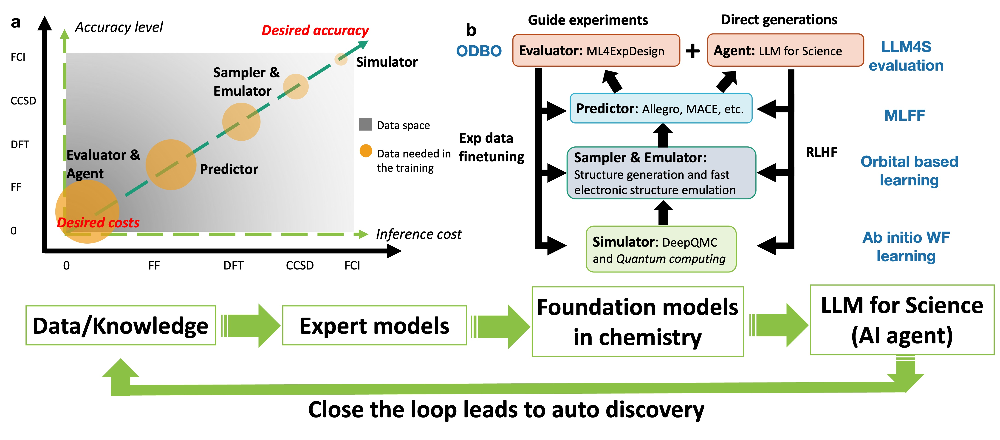

🔬✨ Research Interest Summary
🌐 Rooted in AI × quantum × chemistry, our interests span machine learning, quantum computing, molecular simulation, generative molecular & materials design, property prediction, and experiment design. Our mission is to deliver useful, not just fancy tools that fuse physics-based principles with data-driven models to accelerate scientific discovery.
Our target problem scale: We study AI x Quantum problems across the Chemistry scale of the Physical Sciences (from electrons to materials). This multiscale view is inspired by the Church–Turing–Deutsch principle, which treats the universe as ultimately programmable and keeps us honest about what can (and cannot) be simulated with physics-aware computation.
• Science perspective: Pursue the “fifth-paradigm” vision of AI4Science to accelerate discovery.
• Computer science perspective: Treat each module as a milestone toward practical AGI.
• Philosophy perspective: Understand if “the universe is a Turing machine" by probing if quantum events remain Turing-computable.

💭 Our Philosophy & Perspective
Our philosophy: Build general, practical, and scalable AI4Science tools that tightly link simulators, emulators, predictors, and evaluators/agents. Every module is designed to be modular yet physics-grounded, enabling rapid iteration between computation, reasoning models, and experimental feedback.
💡 Establish a "Physics-as-computation" mindset: Physical Processes ≈ Computational Processes ≈ Generative AI trinity.
• learn the Physics, encode it as Computation, and deploy it in Generative AI that can propose experiments, materials, or design strategies
💡 Engineer the generation represenation of Physical Sciences: Structure ↔ Wavefunction ↔ Property trinity.
• Structure → Wavefunction: Orbformer and Deep QMC learn orbital-resolved wavefunctions.
• Wavefunction → Property: NERD extracts high-accuracy properties; MOB-ML lifts low-level wavefunctions to high-level accuracy.
• Structure → Property: End-to-end predictors/LLM-style architectures return instant predictions.
• Property → Structure: Generative models or scientific agents reverse the flow to suggest new structures.

⚙️🔗 Our Approach: Multiscale + Physics Driven Modeling in AI4Science
🧩 Our research pipeline follows a modular, LEGO-like design philosophy: Each module functions as an interchangeable building block, allowing us to assemble tailored workflows for a wide range of tasks.
Goal: Toward a fast, accurate, and general foundation model for both ground & excited-state problems in physical sciences.

1️⃣ Simulator 🧪: Generates a small but extremely high-quality dataset of wavefunctions using Deep QMC, AI-boosted quantum computing, and other advanced quantum simulation methods.
2️⃣ Emulator ⚙️: Uses orbital-representation-based graph neural networks/transformers to learn the simulator’s outputs and augment data efficiently.
3️⃣ Sampler 🔍: Explores chemical space with generative AI to identify the most informative or rational candidates.
4️⃣ Predictor 🔮: Predicts molecular properties directly from structures (molecular graph, SMILES, etc.), enabling fast, low-cost end-to-end applications.
5️⃣ Evaluator 📝 & Agent 🤖: Fine-tunes large scientific language models as AI agents plus Bayesian optimization to integrate literature data and guide real-world experiments.
🚀🌟 Current Active Projects
1️⃣ AI for Quantum Chemistry
Our view of quantum chemistry is broad: “applied quantum mechanics in chemistry” or “quantum many-body problems in chemistry,” covering electronic structure, quantum dynamics, quantum statistical mechanics, etc.
• Orbital-based machine learning for highly accurate ground- and excited-state wavefunction theory emulation (Emulator): Selected papers 1 2
• Ab initio wavefunction learning via Deep Quantum Monte Carlo (Simulator): Selected papers 1, 2
2️⃣ AI × Quantum Computing × Quantum Chemistry (Simulator)
• Quantum computing for quantum chemistry: Selected papers 1 2
• Machine learning for variational quantum algorithms: Selected papers 1
3️⃣ AI for Material Design via Generative Models (Sampler): Selected papers TBA
4️⃣ Machine Learning PES & Force Field (MLFF) (Predictor; collaborative direction, not a in-house direction): Selected papers 1 2 3 4
5️⃣ AI for Experiment Design (Evaluator): Selected papers 1
6️⃣ Benchmark of LLM & Scientific Dataset Construction (Agent): Selected papers 1